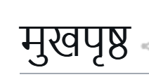

NoteSeen on phone and desktop
On the page
मुखपृष्ठ
The page asked for linux libertine, but Chromium drew this text with Nirmala UI.

What to change
Compare the letters with the intended font. A fallback can be deliberate.
Technical details
- Checked at
- phone (390 px) and desktop (1440 px)
- Screenshot
- Whole page at 390 px
{
"requested": "linux libertine",
"actual": [
{
"familyName": "Nirmala UI",
"postScriptName": "NirmalaUI",
"isCustomFont": false,
"glyphCount": 6
}
],
"note": "Fallback is not always a rendering defect"
}